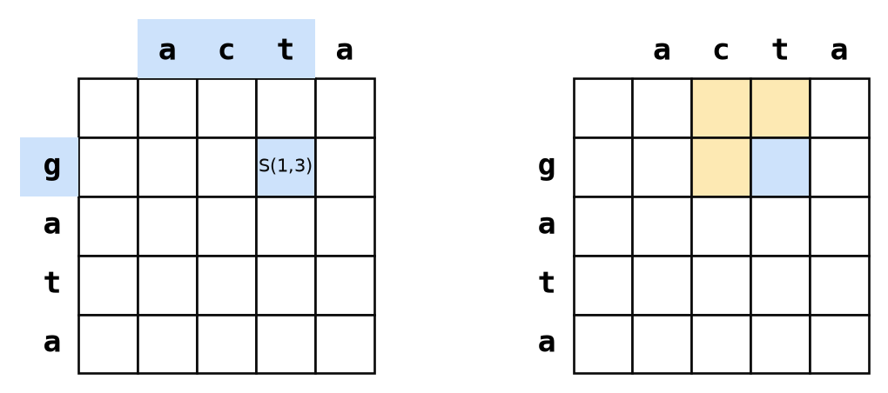
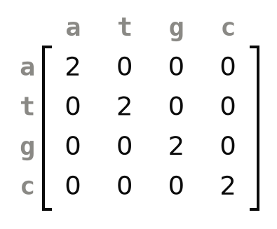
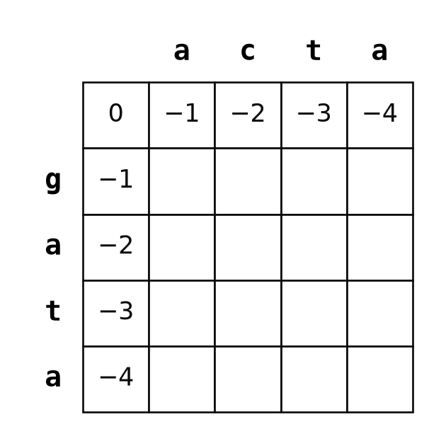
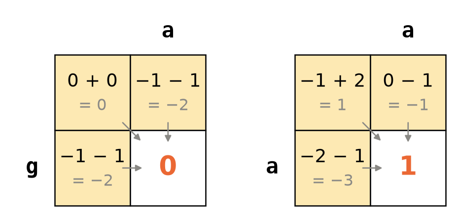
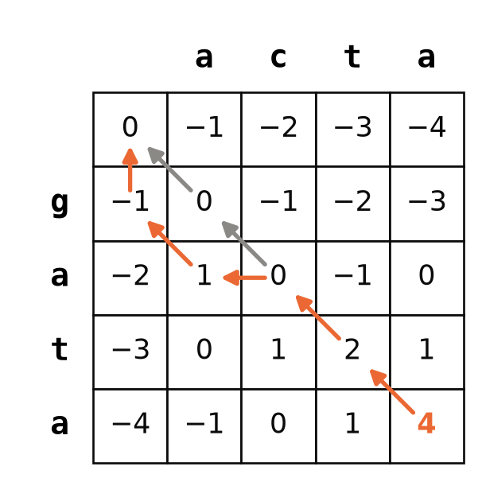
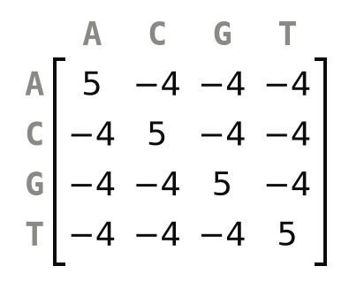
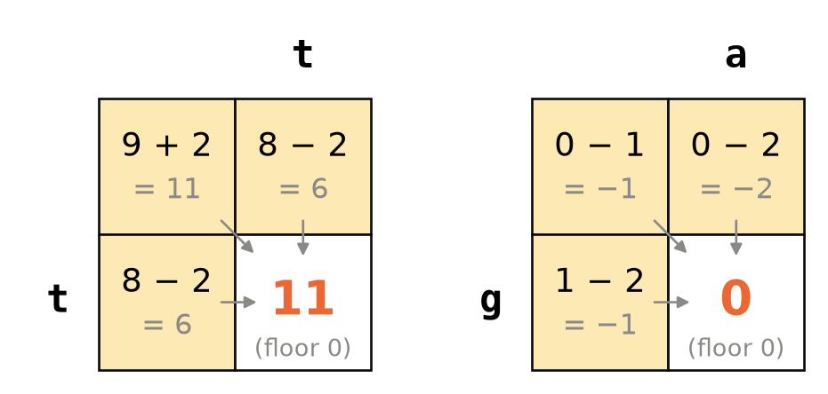
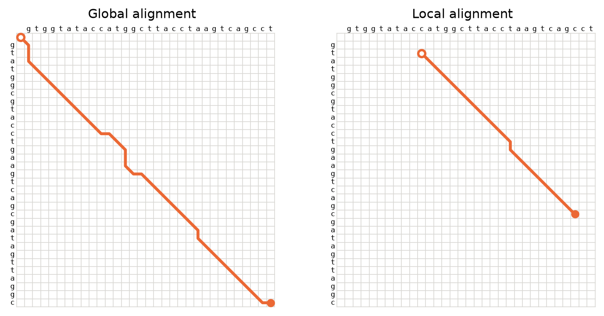
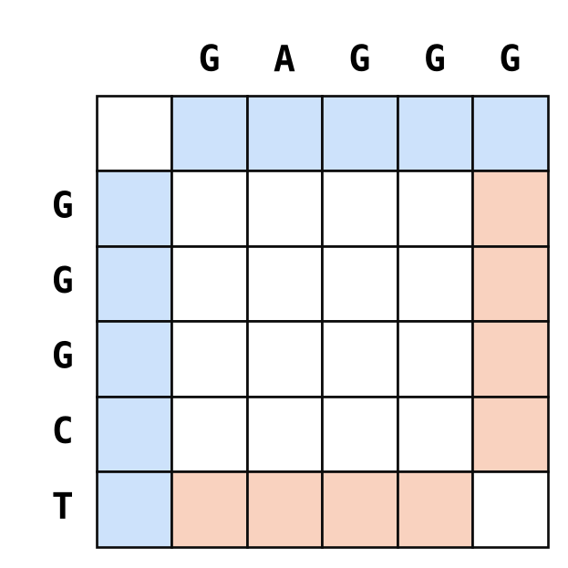
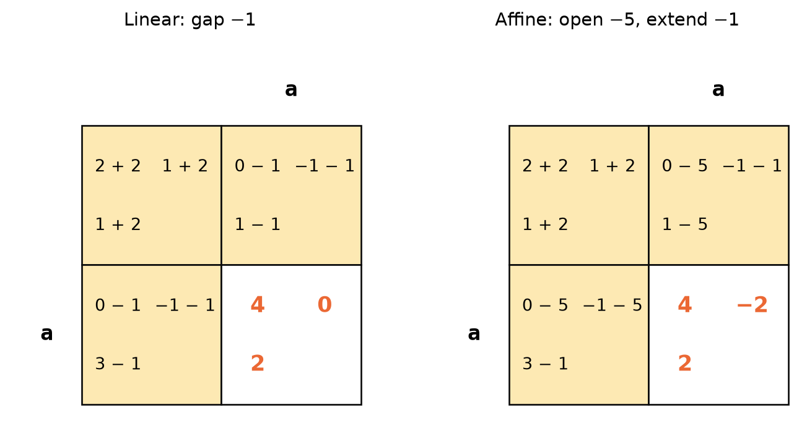

gata and the first three bases of acta. Right: computing it requires the three cells that are diagonally up-left, above, and to the left.

When two DNA sequences descend from the same ancestral sequence, most of their bases still sit in the same order, but some have been substituted, and some have been inserted or deleted. An alignment writes the two sequences above each other so that bases descending from the same ancestral base end up in the same column. This chapter shows how a computer finds the best such alignment among an astronomical number of candidates without trying them all. The method is called dynamic programming, and the version for whole sequences is the Needleman-Wunsch algorithm (Needleman and Wunsch, 1970), which you will implement yourself in Chapter 54.

Here is one way to align the sequences gata and acta:
ga-ta
-actaEach column pairs either two bases or a base with a gap, written as a dash. To decide how good the alignment is, we give each column a score and add them up. A score matrix, like the one in the margin, says what a pair of bases scores. In this one, two identical bases score 2 and two different bases score 0. Every column with a gap gets the gap score, which here is −1. The alignment above has the columns g/−, a/a, −/c, t/t and a/a, so its score is \(-1 + 2 - 1 + 2 + 2 = 4\). Scoring an alignment is the same kind of substitution and reduction you have done on Python expressions: replace each column by its score, then add.
The best alignment is the one with the highest score, and the hard part is finding it. Even gata and acta can be aligned in 321 different ways. Two sequences of 100 bases each can be aligned in about \(2 \times 10^{75}\) ways, so trying them all is out of the question, however fast the computer. The rest of this chapter is about an algorithm that finds the best alignment while looking at only a tiny fraction of them.
The algorithm rests on one observation. If you cut an optimal alignment in two, each part is an optimal alignment of the bases it contains. Take ga-ta over -acta, which is an optimal alignment of gata and acta. Cut it after the third column, or after the fourth:
ga- | ta ga-t | a
-ac | ta -act | aThe left part of the first cut, ga- over -ac, is an optimal alignment of ga and ac. The left part of the second cut is an optimal alignment of gat and act. This has to be so. If there were a better alignment of gat and act, you could put it in front of the last column a/a and get a better alignment of the whole sequences, which contradicts that the one you started with was optimal.
Now look at the last column of the optimal alignment of gata and acta, whatever that alignment is. There are only three possibilities. The last column pairs the last base of each sequence (a with a). Or it pairs the last base of gata with a gap. Or it pairs a gap with the last base of acta. Whatever comes before the last column must, by the observation above, be an optimal alignment of what is left of the two sequences. Write \(S(i, j)\) for the score of the best alignment of the first \(i\) bases of gata and the first \(j\) bases of acta. If someone told us the three scores \(S(3,3) = 2\), \(S(3,4) = 1\) and \(S(4,3) = 1\), the three possibilities would score:
ga-t + a ga-t- + a ga-ta + -
-act a -acta - -act- a\[ S(4, 4) = \max \begin{cases} S(3, 3) + s(\texttt{a}, \texttt{a}) = 2 + 2 = 4 \\ S(3, 4) + g = 1 - 1 = 0 \\ S(4, 3) + g = 1 - 1 = 0 \end{cases} \]
Here \(s(\texttt{a}, \texttt{a})\) is the score matrix entry for an a paired with an a, and \(g\) is the gap score. The best of the three is 4, so the optimal alignment of gata and acta scores 4 and ends with a over a.
This is cheating a little, because nobody told us \(S(3,3)\), \(S(3,4)\) and \(S(4,3)\). But each of them can be found in the same way, from three smaller scores, and each of those from three even smaller ones, until we reach alignments of nothing, which score 0. Written out for any \(i\) and \(j\), with \(a_i\) for base number \(i\) in the first sequence and \(b_j\) for base number \(j\) in the second:
\[ S(i, j) = \max \begin{cases} S(i-1, j-1) + s(a_i, b_j) & \text{if } i > 0 \text{ and } j > 0 \\ S(i-1, j) + g & \text{if } i > 0 \\ S(i, j-1) + g & \text{if } j > 0 \end{cases} \qquad S(0, 0) = 0 \]
The conditions say which of the three possibilities exist. If one sequence has run out (\(j = 0\), say), the only way to end the alignment is with a base from the other sequence against a gap.
A rule that defines something in terms of smaller versions of itself is called recursive, and you could write it directly as a Python function that calls itself. But that function would be hopelessly slow, because it would compute the same scores again and again. \(S(4,4)\) needs \(S(3,3)\), but so do \(S(4,3)\) and \(S(3,4)\), and each of those calls would compute \(S(3,3)\) from scratch. The way out is to compute each score once and write it down.
We write the scores in a table with one row for each number of bases from gata, from 0 to 4, and one column for each number of bases from acta. The cell in row \(i\) and column \(j\) holds \(S(i, j)\). In Figure 53.2, the highlighted cell holds the score of the best alignment of g and act. To compute it, you need the three cells above, to the left, and diagonally up and to the left.

gata and the first three bases of acta. Right: computing it requires the three cells that are diagonally up-left, above, and to the left.
The first row and the first column are easy. Row 0 holds alignments of no bases from gata with some bases from acta. The only way to align act with nothing is to put a gap opposite each base, so \(S(0, 3) = 3g = -3\). In the same way, the first column holds multiples of the gap score, as in Figure 53.3.

Now every other cell can be filled in, as long as we go row by row from the top, and left to right within a row. Then the three cells a new cell needs are always filled in already. Figure 53.4 shows the first cell, row 1 and column 1, which is the best alignment of g and a. Diagonally up-left is 0, and pairing g with a scores 0, which gives 0. Above is −1, and adding a gap gives −2. To the left is also −1, which gives −2. The largest of 0, −2 and −2 is 0, so \(S(1,1) = 0\). The second panel shows the first cell of the next row, where a meets a and the diagonal wins with \(-1 + 2 = 1\).

Draw the table on paper, fill in the first row and column as in Figure 53.3, and then fill in the remaining cells yourself, row by row. For each cell, write down the three candidate scores before you pick the largest. The cell in the bottom right corner should end up holding 4, the score we found above. If it does not, find the first cell where your table differs from the answer and redo that cell.
The bottom right cell tells us that the best alignment of gata and acta scores 4, but not what the alignment is. To find it, we walk back through the table. For each cell, we ask which of its three neighbors its score came from. The bottom right cell got its 4 from the diagonal: \(2 + 2\). A diagonal step means the last column of the alignment pairs a base from each sequence, here a with a. We move to that neighbor and ask the same question. Its 2 also came from the diagonal (\(0 + 2\), pairing t with t), so the alignment ends in ta over ta.
The cell we are now in, row 2 and column 2, holds 0, and that score can be reached two ways: from the diagonal (\(0 + 0\), pairing a with c) and from the left (\(1 - 1\)). Both lead to an optimal alignment. Take the step to the left. A step to the left adds a column with a gap in the sequence down the side and the base from the sequence along the top, here - over c. A step up adds the base from the sequence down the side against a gap. Continuing this way until we reach the top left corner, we collect the columns of the alignment from last to first:
a ta -ta a-ta ga-ta
a ta cta acta -actaFigure 53.5 shows the path in orange. The gray arrows show the other optimal path, which takes the diagonal step at row 2, column 2, and gives the alignment gata over acta. It also scores 4. Two sequences often have several optimal alignments, and the traceback lets you find all of them.

ga-ta over -acta; the gray arrows branch off to the other optimal alignment, gata over acta.
To walk back, you need to know which neighbor each score came from. You can work it out again by redoing the three sums, as we did above. A program does better to record it while filling in the table, in a second table of the same size, with a letter in each cell saying “diagonal”, “up” or “left”. That is how you will do it in Chapter 54.
Find the optimal global alignment of GGGCT and GAGGG by hand. Use a score matrix where identical bases score 2 and different bases score −1, and a gap score of −2. Put GGGCT down the left side of the table and GAGGG along the top. Fill in the table, then trace back from the bottom right corner. When there is a tie, follow each branch: how many optimal alignments are there?
When you have an answer, let the machine check it. The PairwiseAligner from the Biopython chapter does global alignment by default, and you can give it the same scores:
from Bio import Align
aligner = Align.PairwiseAligner(match_score=2, mismatch_score=-1,
open_gap_score=-2, extend_gap_score=-2)
alignments = aligner.align("GGGCT", "GAGGG")
print(alignments.score)
for alignment in alignments:
print(alignment)Before you run it, write down the score and the alignments you expect it to print.
Fill in the table for GATTC (down the side) and GTAC (along the top) yourself, with the same scores as in the previous exercise, and find the optimal alignment. Then give the assistant the two sequences and the scores, and ask it to fill in the same table, one row at a time, and to report the optimal score and alignment. Compare its table with yours, cell by cell. Where the two disagree, redo that cell by hand from its three neighbors to decide who is right, and then run PairwiseAligner on the two sequences to settle the score. Did the assistant make arithmetic slips, pick the wrong maximum, or report an alignment whose score does not add up to the number in its corner cell? Write what you found in your logbook.

The score matrices in this chapter are toys, chosen to make the arithmetic easy. A matrix used in practice for DNA is EDNAFULL, also called NUC.4.4. For the four bases it is just as simple: 5 for identical bases and −4 for different ones. But it also has rows and columns for the ambiguity codes that sequencing data use when a base is not known for certain. N means any base, R means a purine (A or G), W means A or T, and so on. An A paired with a W scores 1, because the W may well be an A. An A paired with an N scores −2.
For proteins, all twenty amino acids get their own row and column, and the scores are no longer just “identical” or “different”. Substituting one amino acid for a chemically similar one happens often in evolution and gets a positive score. Where those numbers come from is a later chapter.
Global alignment, which is what Needleman-Wunsch does, aligns the two sequences from end to end. That is what you want when the sequences are related along their whole length, like the same gene in two closely related species. Often they are not. Two proteins may share a single domain and be unrelated outside it, or you may want to find where a short sequence matches inside a much longer one. A global alignment then has to align the unrelated parts too, and it fills them with mismatches and gaps that mean nothing.
Here are two sequences that share a stretch of 15 bases, with one mismatch, inside unrelated flanks. Scored with 2 for identical bases, −1 for different bases and −2 for a gap, the best global alignment scores 11, and 42 different global alignments share that score. Here is one of them:
TTAGTTGTATGGCGTACCTGAAG--G--CCGC--A
| | ||||| ||||||||| | ||
---G-CG-ATGGCTTACCTGAAGAAGTAGTGCTTGWhat we want is the best alignment between a part of one sequence and a part of the other. That is a local alignment, and the best one here scores 27:
ATGGCGTACCTGAAG
||||| |||||||||
ATGGCTTACCTGAAGLocal alignments are found with the Smith-Waterman algorithm (Smith and Waterman, 1981), which is almost the same as Needleman-Wunsch. The only change is in how a cell is filled in: if all three candidate scores are negative, the cell gets 0 instead. A score of 0 means “start a new alignment here”. When the alignment so far has become so bad that it would drag down anything added to it, the algorithm drops it and starts over, and it never extends an alignment that scores 0 or less.
\[ S(i, j) = \max \begin{cases} S(i-1, j-1) + s(a_i, b_j) \\ S(i-1, j) + g \\ S(i, j-1) + g \\ 0 \end{cases} \]

Two more things change. The first row and column hold zeros, because a local alignment does not have to include the start of either sequence. And the traceback no longer starts in the bottom right corner, because the local alignment does not have to include the ends either. It starts in the cell with the highest score anywhere in the table and stops at the first 0 it meets. Figure 53.7 shows the two traceback paths for the sequences above, with a filled dot where each traceback starts and an open dot where it ends.

Smith-Waterman only works if the score matrix gives unrelated sequences a negative score on average. Otherwise even random bases would build up a positive score, the best local alignment would spread out over everything, and it would stop being local. If base \(a\) occurs with frequency \(q_a\), two random bases are \(a\) and \(b\) with probability \(q_a q_b\), so the condition is
\[ \sum_{a,b} q_a \, q_b \, s(a, b) < 0. \]
Assume the four bases are equally common, so every \(q_a = 1/4\). There are 16 pairs of bases, 4 identical and 12 different. Compute the average score of a random pair of bases, first for the score matrix from the start of this chapter (2 for identical, 0 for different), then for the one from the GGGCT exercise (2 for identical, −1 for different), and finally for EDNAFULL. Which of them can be used for local alignment?
Find the best local alignment of GGGCT and GAGGG by hand, with the same scores as in the global exercise. Fill in the table with zeros in the first row and column and the 0 floor in every cell. Then find the highest score in the table and trace back from there until you meet a 0. Compare the result with the global alignments you found before. Check your score by running the PairwiseAligner from the global exercise again with aligner.mode = "local", after you have written down what you expect it to print.
So far every gap position has cost the same, wherever it is and however long the gap. Real alignment programs score gaps more carefully, in two ways.
Suppose you align a gene sequence you have just read from a sample with a reference sequence that starts a little earlier and ends a little later. The gaps at the ends of the alignment do not reflect any insertion or deletion. They are there only because one sequence was read over a shorter stretch. Penalizing them as if they were real mutations makes the alignment worse. Many programs therefore score gaps at the ends of a global alignment differently, often not at all.
In the table, end gaps live along the edges. The first row and the first column hold alignments that begin with a series of gaps. The last row and the last column are where alignments that end with a series of gaps pass through: once the traceback is in the last column, every step up adds a base from the left sequence against a gap at the end of the alignment.

You want to change Needleman-Wunsch so that gaps at the ends of the alignment score 0 instead of the usual gap score. Using Figure 53.8, find the two places in the algorithm that must change. Then decide what the alignment of GGGCT and GAGGG would look like if end gaps were free. You do not need to fill in a new table for this; think about which bases would have to be left hanging at the ends.
A single mutation can insert or delete many bases at once. A gap of 11 bases is therefore much more likely to be one event than eleven separate events next to each other, and it should not cost eleven times as much as a gap of one base. With the gap score we have used so far, a gap of length \(\ell\) costs
\[ \gamma(\ell) = -d \, \ell, \]
where \(d\) is the cost per gap position. This is called a linear gap score. The alternative is an affine gap score, which charges more for opening a gap than for extending one:
\[ \gamma(\ell) = -d - (\ell - 1) \, e, \]
where \(d\) is the cost of opening the gap and \(e\) the cost of each additional position, with \(e\) much smaller than \(d\). An affine gap score prefers one long gap to several short ones, as mutation does.
With a linear gap score and \(d = 10\), what does a gap of length 11 cost? With an affine gap score, \(d = 10\) and \(e = 1\), what does the same gap cost? And what do two separate gaps of length 1 cost with the affine score?
An affine gap score seems to break the algorithm. To score a step up into a cell, we now need to know whether the best alignment ending in the cell above already ended in a gap (and we extend it) or not (and we open a new one). The fix is to keep three scores in every cell instead of one: the best score of an alignment that ends with a pair of bases, the best that ends with a base from the left sequence against a gap, and the best that ends with a gap against a base from the top sequence. Each of the three is computed from the three scores in one neighbor. A diagonal step adds the score of the base pair to the best of the three. A step down from the cell above extends the gap if that alignment already ended in the same kind of gap, and opens a new gap otherwise. The step from the left works the same way.
Figure 53.9 shows this for a single cell. The upper left number in each cell is the pair score, the upper right is the gap-in-the-top-sequence score, which only a step down can extend, and the lower left is the gap-in-the-left-sequence score, which only a step to the right can extend. With a linear gap score (left), keeping three numbers changes nothing: the largest of the new cell’s three scores is the 4 we would have computed anyway. With an affine score (right), the numbers differ, and keeping all three is what lets the algorithm tell opening from extending (Gotoh, 1982).

Three scores per cell means three times the work per cell, but the number of cells is the same. Filling in the table for two sequences of length \(n\) takes about \(n^2\) steps either way, which is written \(O(n^2)\). Doubling the length of both sequences makes the work four times as large. That is a lot for two whole genomes, but tiny compared with trying all \(2 \times 10^{75}\) alignments of two sequences of 100 bases.
You will rarely fill in an alignment table by hand again after this chapter, and after the project you will rarely need to write the code either. The European Bioinformatics Institute offers EMBOSS Needle for global alignment and EMBOSS Water for local alignment, both on the web. For DNA, they use EDNAFULL with an affine gap score that costs 10 to open and 0.5 to extend. Needle does not penalize end gaps unless you ask it to. The PairwiseAligner in Biopython does the same jobs from Python: its mode attribute chooses global or local alignment, and open_gap_score and extend_gap_score set an affine gap score.
Open EMBOSS Needle and EMBOSS Water, choose the nucleotide versions, and align the two sequences from the section on local alignment:
TTAGTTGTATGGCGTACCTGAAGGCCGCA
GCGATGGCTTACCTGAAGAAGTAGTGCTTGBefore you submit, predict which of the two programs will find the shared stretch ATGGCGTACCTGAAG and how the other will treat the flanks, given that its end gaps are free. Then compare the results with the alignments printed in that section. Open “More options” in Needle and find the setting for each of the scores discussed in this chapter: the score matrix, gap opening, gap extension and end gaps.